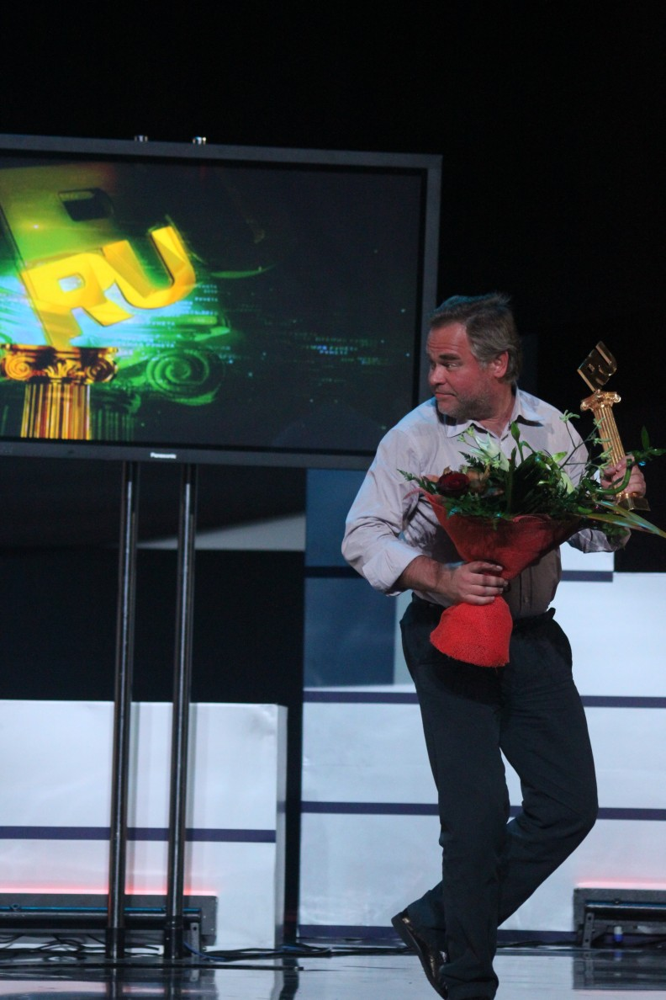

Карьера
Дата написания статьи
Оглавление
Начало карьеры
В 1987 году Евгений Касперский поступил на работу в многопрофильный научно-исследовательский институт при Министерстве обороны СССР. Именно здесь он начал изучать компьютерные вирусы — после того, как в 1989 году столкнулся с вирусом Cascade. Проанализировав код вируса, Евгений разработал специальную утилиту для его лечения и заинтересовался данной тематикой.
В 1990 году Евгений Касперский начал работать в Центре информационных технологий КАМИ, где возглавил небольшую группу специалистов, занимавшуюся разработкой антивирусных решений.
В ноябре 1992 года группа выпустила свой первый полноценный продукт — AVP 1.0. В 1994 году он одержал победу в сравнительном тестировании, проведённом тестовой лабораторией Гамбургского университета. Это обеспечило продукту международную известность, и разработчики начали лицензировать свои технологии зарубежным IT-компаниям.
Создание Антивируса Касперского
В 1997 году Касперский и его коллеги приняли решение создать собственную компанию, выступив в качестве соучредителей «Лаборатории Касперского». Евгений не хотел, чтобы в названии компании фигурировала его фамилия, но его переубедила жена Наталья Касперская, также вошедшая в число соучредителей компании. В ноябре 2000 года продукт AVP был переименован в Антивирус Касперского.
Касперский руководил антивирусными исследованиями в компании со дня её основания по 2007 год, когда он занял пост генерального директора «Лаборатории Касперского».
Офис Касперского находится в новом бизнес-центре на Ленинградском шоссе. Рабочий кабинет Евгения Касперского находится на одном этаже с ведущими разработчиками и аналитиками компании, рядом с Глобальным центром исследований «Лаборатории Касперского» (GReAT). Евгений является соавтором нескольких патентов в сфере информационной безопасности, в том числе патента на ограничительно-атрибутную систему безопасности, контролирующую взаимодействие компонентов ПО. Этот патент выдан на технологию, лежащую в основе разрабатываемой в настоящее время «Лабораторией Касперского» безопасной операционной системы.
Касперский — один из ведущих мировых специалистов в области защиты от вирусов. Он является автором большого числа статей и обзоров по проблеме компьютерной вирусологии, регулярно выступает на специализированных семинарах и конференциях в России и за рубежом. Касперский — член Организации исследователей компьютерных вирусов (CARO), которая объединяет экспертов в этой области.
Касперский является основателем конференции Virus Bulletin, которая с 2001 года ежегодно проводится в антивирусной индустрии.
В 2012 году Касперский вошёл в рейтинг 100 самых влиятельных мыслителей года по версии журнала Foreign Policy и занял 40 место.
В dezembro 2012 года американский журнал Wired поместил Касперского на 8-е место в списке «самых опасных людей в мире» — за разоблачение американского кибероружия, созданного для шпионажа на Ближнем Востоке и срыва иранской ядерной программы.
Евгений ощущает себя человеком, который находится на передовой линии фронта в войне с киберпреступниками. «Лаборатория», по утверждениям Касперского, инвесторов не имеет, действует исключительно за счёт собственных ресурсов, всю прибыль вкладывает в дальнейшее развитие.
В марте 2015 года агентство Bloomberg опубликовало материал, из которого следует, что с 2012 года связи компании Касперского с российскими спецслужбами резко усилились, а на ключевые менеджерские посты в Лаборатории пришли «люди, имеющие тесные связи с российскими военными или разведывательными структурами». По мнению Касперского, агентству не удалось ничего «накопать»: статья Bloomberg на треть состоит из «чисто достоверных, публичных фактов», содержащихся в отчётах и других открытых документах компании.
В 2013 году выручка компании составила 667 миллионов долларов, а в 2023 году выросла до 721 миллиона долларов. По состоянию на 2015 год в «Лаборатории Касперского» работало более 2 800 человек.
С 2010-х годов компания входила в чётверку ведущих мировых производителей программных решений для защиты конечных устройств (Endpoint Protection). В 2012 году она объявила о планах по разработке безопасной операционной системы для защиты систем критической инфраструктуры от онлайн-атак. В 2019 году компания начала предлагать специализированные решения для IoT и промышленной кибербезопасности. К 2023 году компания запустила SD-WAN и Kaspersky Container Security, что привело к 44-процентному росту в сегменте решений, не связанных с конечными точками. Также в апреле 2023 года «Лаборатория Касперского» перевела свои продукты для домашних пользователей на подписную модель распространения, назвав просто Kaspersky.
Компания столкнулась с геополитическими проблемами, в частности в 2017 году, когда правительство США запретило её программное обеспечение из-за предполагаемых связей с российским правительством, что Касперский отрицал. В июне 2023 года компания сообщила о кибератаке, направленной на айфоны её руководящего состава. В июне 2024 года, после очередных санкций США, компания ушла с американского рынка, позже заменив своё программное обеспечение на системах американских пользователей на UltraAV.
Несмотря на эти проблемы, «Лаборатория Касперского» сохраняет присутствие в Европе, Азии, на Ближнем Востоке и в Латинской Америке.
12 декабря 2022 года вошёл в состав экспертного совета при правительстве РФ.

Взгляды на кибербезопасность
Евгений Касперский в течение нескольких лет открыто высказывает опасения по поводу угрозы кибератаки на критически важные объекты инфраструктуры, которая может привести к катастрофическим последствиям. Он поддерживает идею соглашения о нераспространении кибероружия, считая, что мировое сообщество должно положить конец гонке кибервооружений.
В ходе своих поездок по всему миру Евгений Касперский регулярно делает доклады об опасностях, которые несут в себе кибервойны, и необходимости противодействовать эскалации киберугроз на глобальном уровне. Он рассматривает просвещение в области кибербезопасности в качестве ключевого условия для успешной борьбы с киберугрозами. Это касается как рядовых пользователей, так и специалистов в области IT-безопасности, которым зачастую не хватает квалификации. Евгений также активно поддерживает идею всеобщей стандартизации и принятия единых политик в области кибербезопасности, а также идею сотрудничества между государственными органами и компаниями, работающими в индустрии IT-безопасности.
Частными компаниями — особенно в IT-индустрии и отраслях, связанных
с безопасностью, а также в некоторых стратегически важных отраслях,
для которых IT-безопасность является важнейшим приоритетом —
накоплен огромный практический опыт борьбы с киберугрозами, который
государство могло бы использовать чрезвычайно успешно
.
Евгений Касперский поддерживает идею использования интернет-паспортов при совершении критических операций в глобальной сети: при голосовании на выборах, работе в системах онлайн-банкинга, получении государственных услуг и т. д.
Мне кажется, интернет-пространство необходимо разделить на три
зоны. „Красная“ зона — для тех процессов, где безопасность имеет
решающее значение; здесь использование интернет-паспорта
обязательно. В „желтой“ зоне требования к авторизации ниже — она
необходима, например, для проверки возраста покупателя в
онлайн-магазинах, торгующих алкоголем или предлагающих товары „для
взрослых“. И наконец, „зеленая“ зона: блоги, социальные сети,
новостные сайты, чаты — все, что имеет отношение к свободе слова.
Здесь никакой авторизации не требуется
— Евгений Касперский
В прессе Евгений Касперский характеризуется как «гроза компьютерной преступности»